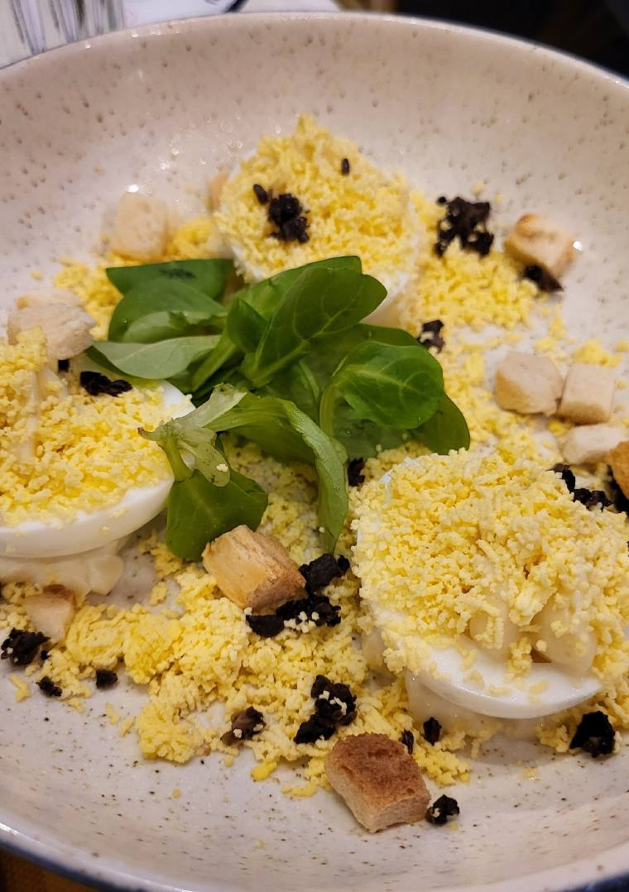

Entrées

Entrées
Œufs mimosa
Préparation : 15 min
Cuisson : 10 min
Ingrédients (pour 4 personnes)
- 4 œufs
- 2 cuillères à soupe de mayonnaise
- 1 cuillère à café de moutarde (facultatif)
- quelques brins de ciboulette ou de persil
- 2 g de sel
- 0,5 g de poivre
Quantités adaptées. Les temps de cuisson ne sont pas recalculés.
- Faire cuire les œufs dans de l’eau bouillante pendant 10 minutes pour obtenir des œufs durs. Les passer sous l’eau froide, les écaler puis les couper en deux dans le sens de la longueur.
- Retirer délicatement les jaunes et les écraser à la fourchette dans un bol. Mélanger avec la mayonnaise, la moutarde, le sel et le poivre.
- Remplir les blancs d’œufs avec cette préparation. Émietter un peu de jaune sur le dessus pour l’effet mimosa. Parsemer de ciboulette ou de persil ciselé.
- Servir frais en entrée.
AstuceVeillez à ne pas trop cuire les œufs pour éviter que le jaune ne devienne trop sec.